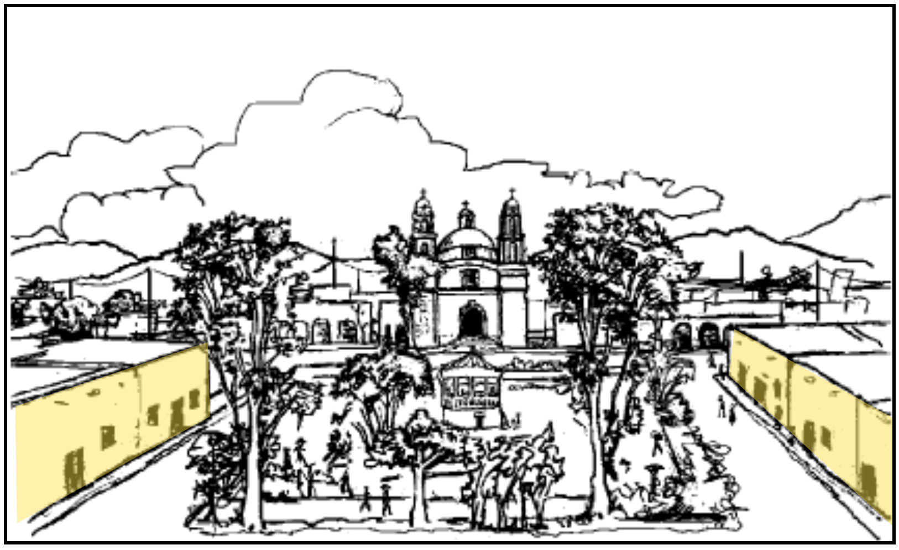

Version: 2019/11/18
Jack Bowers
Data is free to reuse with attribution given the author.
Attribution CC-BY
External Documents
SIL Mexico Publications
Kunka'vi hora ka
Beckmann, Gisela(translator); Nieves, María
M.(translator). 2007. (2nd ed.).
Instituto Lingüístico de Verano, A.C.
Tlalpan, D.F., México
Kunchau hora ka
Beckmann, Gisela; Gómez Hernández, María.
2007. (2nd ed.). Instituto
Lingüístico de Verano, A.C.
Tlalpan, D.F., México
¿Nchii inkaa vilu ka?
Beckmann, Gisela; Nieves, María M..
2007. (2nd ed.). Instituto
Lingüístico de Verano, A.C.
Tlalpan, D.F., México
¿A tsinu kue tsa'a kiti?
Beckmann, Gisela(translator); Nieves, María
M.(translator). 2007. (2nd ed.).
Instituto Lingüístico de Verano, A.C.
Tlalpan, D.F., México
Nixi ntsikoo sa'ma yakui ka
Gómez Hernández, María; Beckmann, Gisela;
Nieves, María M..2007. (2nd
ed.). Instituto Lingüístico de Verano, A.C.
Tlalpan, D.F., México
Staa nti'i
Beckmann, Gisela; Nieves, María M..
2007. (2nd ed.). Instituto
Lingüístico de Verano, A.C.
Tlalpan, D.F., México
Tu'un Sa'an Ntavi
Beckmann, Gisela; Nieves, María M..
2007. (2nd ed.). Instituto
Lingüístico de Verano, A.C.
Tlalpan, D.F., México
Ña xiko xikui
Beckmann, Gisela; Nieves, María M..
2007. (2nd ed.). Instituto
Lingüístico de Verano, A.C.
Tlalpan, D.F., México
Chuun luu ka sachuun ña xeen ti
Beckmann, Gisela; Nieves, María M..
2007. (2nd ed.). Instituto
Lingüístico de Verano, A.C.
Tlalpan, D.F., México
Narration of story
María Góméz Hernández
Uni ntikuain
Gómez Hernández, María; Beckmann, Gisela;
Nieves, María M.. 2007. Instituto
Lingüístico de Verano, A.C.
Tlalpan, D.F., México
Ntantuku ichi
Beckmann, Gisela; Nieves, María M..
2007. (2nd ed.). Instituto
Lingüístico de Verano, A.C.
Tlalpan, D.F., México
To'lo ña ma nikuii ka kana
Beckmann, Gisela; Nieves, María M..
2007. (2nd ed.). Instituto
Lingüístico de Verano, A.C.
Tlalpan, D.F., México
Narration of story
María Góméz Hernández
Nakutu'a ko ka'ncha sava kue ña'a
Beckmann, Gisela; Nieves, María M..
2008. (2nd ed.). Instituto
Lingüístico de Verano, A.C.
Tlalpan, D.F., México
linguistic consultation
varios hablantes del Mixteco de Mixtepec
Tutu ña sna'a nixi sku'a ñayivi
Beckmann, Gisela; Nieves, María M..
2009. (2nd ed.). Instituto
Lingüístico de Verano, A.C.
Tlalpan, D.F., México
linguistic consultation
Marina Ramos López
Prof. Wilfrido López Hernández
Prof. Mendoza Santiago, Francisco
Obtained from:
Ña niyu'u nchu'a
Gómez Hernández, María; Beckmann, Gisela
Nieves, María M.. 2008. (2nd
ed.). Instituto Lingüístico de Verano, A.C.
Tlalpan, D.F., México
Tina nii tsi ntiva'u
López Santiago, Samuel; Beckmann, Gisela
Nieves, María M.. 2008. (2nd
ed.). Instituto Lingüístico de Verano, A.C.
Tlalpan, D.F., México
Tuyuku Xnuviko
Mendoza Santiago, Francisco; Beckmann, Gisela
Nieves, María M.. 2009. (2nd
ed.). Instituto Lingüístico de Verano, A.C.
Tlalpan, D.F., México
Tuyuku ka'nu
López Santiago, Samuel; Beckmann, Gisela
Gómez Hernández, María. 2008. (2nd
ed.). Instituto Lingüístico de Verano, A.C.
Tlalpan, D.F., México
narrator
Samuel López Santiago
Linkui tsi stiki
Bautista Ramírez, Verónica; Beckmann, Gisela
Gómez Hernández, María. 2008. (2nd
ed.). Instituto Lingüístico de Verano, A.C.
Tlalpan, D.F., México
Kue chuun ña yee nii kuia nuu ñoo
Beckmann, Gisela(consultant); Nieves, María
M.(consultant). 2009. (2nd ed.).
Instituto Lingüístico de Verano, A.C.
Tlalpan, D.F., México
Viko tanta'a lakuku tsi ncho'o
Ramos Hernández, Herminia; Beckmann, Gisela
Nieves, María M.. 2008. (2nd
ed.).Instituto Lingüístico de Verano, A.C.
Tlalpan, D.F., México
Ñatu'un Tuyuku Xnuviko
López Hernández, Wilfrido; Nieves, María M.
Beckmann, Gisela. 2008. (2nd
ed.).Instituto Lingüístico de Verano, A.C.
Tlalpan, D.F., México
narrators: escuela primaria Unión y Progreso de Llano Colorado Mixtepec,
generación 2006
Prof. Wilfrido López Hernández
Tu'un yata ñaña'a kua'in tsi inka chaa
Mendoza Santiago, Francisco; Beckmann, Gisela
Nieves, María M.. 2008. (2nd
ed.).Instituto Lingüístico de Verano, A.C.
Tlalpan, D.F., México
Sa'va tsi lochi
Gómez Hernández, María(speaker); Beckmann,
Gisela; Nieves, María M.. 2008
(2nd ed.).Instituto Lingüístico de Verano,
A.C.
Tlalpan, D.F., México
Ntintsitsa ntivixi
Gómez Hernández, María; Beckmann, Gisela;
Nieves, María M.. 2008. (2nd
ed.).Instituto Lingüístico de Verano, A.C.
Tlalpan, D.F., México
Tu'un yata tsa'a kue kaa kaxi Xnuviko
Mendoza Santiago, Francisco; Beckmann, Gisela
Nieves, María M.. 2008. (2nd
ed.).Instituto Lingüístico de Verano, A.C.
Tlalpan, D.F., México
Tu'un yata uvi veñu'u
Mendoza Santiago, Francisco; Beckmann, Gisela;
Nieves, María M.. 2008. (2nd
ed.).Instituto Lingüístico de Verano, A.C.
Tlalpan, D.F., México
Ntinuni ntintsitsa
Beckmann, Gisela(consultant); Nieves, María
M.(consultant). 2008. (2nd ed.).
Tlalpan, D.F., México:Instituto Lingüístico de
Verano, A.C.
narrator
miscelaneous Mixtepec-Mixtec speaker from San Lucas
Mixtepec
Ntiu'un lurru
Beckmann, Gisela; Nieves, María M..
2008. (2nd ed.).Tlalpan, D.F.,
México:Instituto Lingüístico de Verano, A.C.
linguistic consultation
multiple unnamed Mixtepec-Mixtec speakers
Uvi ntikuina
Beckmann, Gisela; Gómez Hernández,
María(speaker); Nieves, María M.. 2008.
(2nd ed.).Tlalpan, D.F.,
México:Instituto Lingüístico de Verano, A.C.
Kue numero mancha iin sientu
Beckmann, Gisela(consultant); Nieves, María
M.(consultant); 2008. (2nd
ed.).Tlalpan, D.F., México:Instituto
Lingüístico de Verano, A.C.
Ma sana ino sa'an ko
Beckmann, Gisela; Nieves, María M..
2008. (2nd ed.).Tlalpan, D.F.,
México:Instituto Lingüístico de Verano, A.C.
Ntusu Sa'an Savi
Beckmann, Gisela; Nieves, María M..
2011. Ciudad de México:Instituto Lingüístico de Verano, A.C.
Na kutu'va ko sa'an savi
Nieves, María M..
2018. Tlalpan, D.F.,
México:Instituto Lingüístico de Verano, A.C.
Pastor and Azcona Publications
Paster, M., 2004.
A phonological sketch of
the Yucunany Mixtepec Mixtec person marking
. In Lea Harper and
Carmen Jany (Ed.), Proceedings of Conference on Oto-Manguean and
Oaxacan Languages (COOL). UC Berkeley, Berkeley.
Paster, M., 2004.
A phonological sketch of
the Yucanani Mixtepec dialect of Mixtec
. In Lea Harper and
Carmen Jany (Ed.), Proceedings of the 7th Annual Workshop on American
Indian Languages (pp. 61-76). UC Santa Barbara.
Paster, Mary and Beam de Azcona, Rosemary.
2004a.
Aspects of tone in Yucunany Mixtepec Mixtec
.
In Lea Harper and Carmen Jany (Ed.), Proceedings of the 7th
Annual Workshop on American Indian Languages (pp. 61-76). UC Santa Barbara.
Paster, M. and Beam de Azcona, Rosemary.
2004b.
Aspects of tone in the Yucunany dialect of Mixtepec
Mixtec
. Paper presented at the Conference on Otomanguean and Oaxacan
Languages, University ofCalifornia, Berkeley.
Paster, M.
2005.
Tone Rules in Yucanani Mixtepec Mixtec
. SSILA
meeting (p. 13). Oakland: SSILA.
Paster, M., 2007.
The origin of (Apparent)
Avoidance of homophony in Yucanany Mixtepec dialect of Mixtec
.,
Proceedings of American Indian Languages (August, 17). UCLA.
Pike, Eunice V. and Thomas Ibach.
1978.
The phonology of the Mixtepec dialect of Mixtec
.
Pp. 271-285 in Mohammed Jazayery, Edgar C. Polomé, and Werner Winter, eds. Linguistic
and Literary Studies in Honor of Archibald A. Hill, Volume 2: Descriptive
Linguistics. The Hague: Mouton.
María Gómez Hernández and Saúl Sánchez Hernández. 2018.
Bichos
., Instituto Lingüístico de Verano, A.C.http://mexico.sil.org/es/resources/archives/72837
Other Mixtecan Language Publications
Vocabulario en Lengua Mixteca. Hecho por los Padres de la Orden
de Predicadores
Francisco De Alvarado
En Mexico
Con Licencia, en casa de Pedro Balli.
1593
Bradley, C. Henry. 1970. A Linguistic
Sketch of Jicaltepec Mixtec. Summer Institute of Linguistics Publications in
Linguistics and Related Fields, no. 25. Norman: Summer In-stitute of Linguistics
of the University of Oklahoma.
Bradley, C. Henry,and Barbara E.
Hollenbach.1988. Introduction. Studies in the Syntax of Mixtecan Languages, vol.
1, Summer Institute of Linguistics Publications in Linguistics, no. 83, ed. C.
Henry Bradley and Barbara E. Hollenbach, pp. 1-10. Dallas: Summer Institute of
Linguistics and the University of Texas at Arlington.
Bradley, David P. 1991. A syntactic sketch of
Santa Maria Pápalo Cuicatec. Studies in the Syntax of Mixtecan Languages, vol. 3,
Summer Institute of Linguistics and the University of Texas at Arlington
Publications in Linguistics, no. 105, ed. C. Henry Bradley and Barbara E.
Hollenbach, pp. 409-506. Dallas: Summer Institute of Linguistics and the
University of Texas at Arlington.
Brugman, Claudia. 1983. The use of body-part terms as
locatives in Chalcatongo Mixtec. Studies in Mesoamerican Linguistics, Survey of
California and Other Indian Languages, Report no. 4, ed. Alice Schlichter et al.,
pp. 235-90. Berkeley, Calif.
Brugman, Claudia, and Monica Macaulay. 1986.
Interacting semantic systems: Mixtec expressions of location. Proceedings of the
Berkeley Linguistics Society 12:315-27.
Bradley, C. H., Hollenbach, B. E. (Eds.).
(1990). Studies in the Syntax of Mixtecan Languages. 2 (90).
Bradley, C. H., Hollenbach, B. E. (Eds.).
(1991). Studies in the Syntax of Mixtecan Languages 3. 3, 408.
Bradley, H. C., Hollenbach, B. E. (Eds.).
(1992). Studies in the Syntax of Mixtecan Languages 4. 4.
Daly, J. P. (1973). A Generative Syntax of
Peñoles Mixtec (Vol. 42). (I. Davis, Ed.) Norman, Oklahoma: Summer Institute of
Linguistics.
Eberhardt, R. (1999). Question and
Inversion in Octopec Mixtec. Working Papers of the Summer Institute of Linguistics
, 43.
Farris, E. (1981). Yosondúa Mixtec Kinship
Terms. In W. R. Merrifield (Ed.), Proto-Otomonguean Kinship (pp. 193-197). Dallas:
International Museum of Cultures, Publication 11.
Farris, Edwin R. 1992. A syntactic sketch of Yosondúa
Mixtec. Studies in the Syntax of Mixtecan Languages, vol. 4, Summer Institute of
Linguistics and the University of Texas at Arlington Publications in Linguistics,
no. 111, ed. C. Henry Bradley and Barbara E. Hol-lenbach, pp. 1-171. Dallas:
Summer Institute of Linguistics and the University of Texas at Arlington.
Hills, Robert A. 1990. A syntactic sketch of
Ayutla Mixtec. Studies in the Syntax of Mix-tecan Languages, vol. 2, Summer
Institute of Linguistics and the University of Texas at Arlington Publications in
Linguistics, no. 90, ed. C. Henry Bradley and Barbara E. Hollenbach, pp. 1-260.
Dallas: Summer Institute of Linguistics and the University of Texas at Arlington.
Hollenbach. Barbara E. 1990. Semantic
and syntactic extensions of Copala Trique body-part nouns. Homenaje a Jorge A.
Suarez: Lingüistica Indoamericana e Hispánica, ed. Beatriz Garza Cuarón and
Paulette Levy, pp. 275-96. Mexico City: El Colegio de México.
Hollenbach, B. E. (1995). Semantic and
Syntactic Extensions of Body-Part Terms in Mixtecan: The case of "Face" and
"Foot". International Journal of American Linguistics , 61, 168-190.
Johnson, Audrey F. 1988. A syntactic
sketch of Jamiltepec Mixtec. Studies in the Syntax of Mixtecan Languages, vol. 1,
Summer Institute of Linguistics Publications in Linguistics, no. 83, ed. C. Henry
Bradley and Barbara E. Hollenbach, pp. 11-150. Dallas: Summer Institute of
Linguistics and the University of Texas at Arlington.
Kuiper, A., Merrifeild, W. R.
(1975). Diuxi Mixtec Verbs of Motion and Arrival. International Journal of
American Linguistics , 41 (1), 32-45.
Kuiper, A., and Oram, J. 1991.
A syntactic sketch of Diuxi-Tilantongo Mixtec. Studies in the Syntax of Mixtecan
Languages, vol. 3, Summer Institute of Linguistics and the University of Texas at
Arlington Publications in Linguistics, no. 105, ed. C. Henry Bradley and Barbara
E. Hollenbach, pp. 179-408. Dallas: Summer Institute of Linguistics and the
University of Texas at Arlington.
Macaulay, M. (1996). A grammar of
Chalcatongo Mixtec (University of California publications in linguistics ed.).
University of California Press.
Macaulay, M. (1987). Cliticization and
the Morphosyntax of Mixtec. International Journal of American Linguistics , 53
(2), 119-135.
Merrifield, W. R., and Burquest, D. A.
(Eds.). (1992). Studies in Mixtecan Syntax 4. 4 (111).
Merrifield, W. R., Burquest, D. A. (Eds.).
(1992). Studies in Mixtecan Syntax 4. 4 (111).
Lewis, M. Paul (ed.), 2009. Ethnologue: Languages of the World, Sixteenth
edition. Dallas, Tex.: SIL International. Online version:
http://www.ethnologue.com/.
Small, Priscilla C. 1990. A syntactic sketch
of Coatzospan Mixtec. Studies in the Syntax of Mix-tecan Languages, vol. 2, Summer
Institute of Linguistics and the University of Texas at Arlington Publications in
Linguistics, no. 90, ed. C. Henry Bradley and Barbara E. Hollenbach, pp. 1-260.
Dallas: Summer Institute of Linguistics and the University of Texas at Arlington.
Williams, J. L. (1996). Tezoatlán Mixtec
Motion and Arrival Verbs. International Journal of American Linguistics , 62 (3),
289-305.
Padgett, E. (2017). Tools for assessing
relatedness in understudied language varieties: a survey of Mixtec varieties in
Western Oaxaca, Mexico. University of North Dakota.
Longacker, Robert E. and Millon,
René. (1961). Proto-Mixtecan and Proto-Amuzgo-Mixtecan vocabularies: a preliminary
cultural analysis. Anthropological Linguistics,1–44
Dürr, Michael. 1987. A preliminary reconstruction of the proto-Mixtec tonal system.
Indiana 11: 19–61
Juan "Tisu'ma" Salazar
Geremaia Salazar
Jack Bowers
The Mixtepec-Mixtec (MIX) dictionary file contains 1137 lexical entries and related
entries which represent only a fraction of the total vocabulary contents of this project.
These items are continually being added from the sources in the bibliography and from
spoken utterances.
The vocabulary contents of this document are meant to be
entered as a result of mining the language resource data sources from which the
vocabulary was obtained. The entries in this version of the document were made
manually however future versions will be made using XSLT processes that mine all
transcribed, written and glossed MIX data.
kue
nivi
noun
pl
[
Living Beings]
se'e
people
,
gente
Yo'o nantakani iin tu'un yata ña nikuu nisa'a kue nivi na ntsintee ta tsa na'a.
(2)
[
Space]
[
spatialRelations]
LM
relationNoun
LM
The front of (sth).
La parte delantera de (algo).
nuu ve'e
the front of the house
parte delantera de la casa

(Etymology - metaphor)
active zone source profile (aka
ontological knowledge/impetus) motivating the metaphor is the relative
configuration of the part FACE relative to (LM) BODY. FRONT-REGION partOf
BODY> FRONT-REGION partOf OBJECT
[
AnatomicalStructure]
facecara
as in:
como:
part of the body
parte del cuerpo
(3)
in front of
,
en frente de
(Etymology - metonymy)
FRONT-REGION partOf BODY > ADJACENT-SPACE to FRONT-REGION OfBody
LM must still be Body(of person or animal)
the lemma form can be inflected to reflect: possessive (person, number, ),
register, Semantic Role (eg. ..)
ntuchinuu[ndùʧínũ̀ṹ]
noun
[
SpatialRegion]
Used in combination with another locational noun to refer to a transitional or border
region of that item.
Sara ntsai yu'u yucha ka sara ntsikutanchii nuu yuu ka sara nikitsai tsi'a chikuii.
+
nta'a
hand
arm
As the face is the part of the body which interacts with the external world, the
palm is the part of the hand which interacts with the external world
back of hand
this could have multiple analyses, one in which 'back' is considered to be a
'body part' term only and is metaphorically applied to other domains, the other in
which
(Etymology - )
shortened form of:
MIX
ve'e
house or building
casa o edificio
+
(Etymology - metonymy)
kaa
metal
metal
Which is Metonymy (part for whole): the metal
bars are a prominant part of the concept of jail thus provide a salient
lexical reference point for the vocabulary.
ve'e chuunvechuun[ve˧tʃĩ˥ũ˧]
noun
townhall
,
alcaldía
(Etymology - compounding)
Compound of:
(Etymology - )
shortened form of:
MIX
ve'e
house or building
casa o edificio
+
(Etymology - metonymy)
chuun
work
trabajo
Which is Metonymy (part for whole): the activity
of working is a prominant part of the concept of town hall thus provides a
salient lexical reference point for the vocabulary.
(Etymology - compounding)
This word is derived from a compound of 'head' and
'house/building'. The use of the former represents a shift in the domain of the
source term from 'head' as a direct meronym of 'body' to a meronym of
'building'. Thus the semantic profile shift is: 'TOP partOf BODY' to 'TOP
partOf BUILDING'.
[
Literacy]
[
Language]
Ntusu Sa'an Savi
The Mixtepec-Mixtec alphabet
El alfabeto Misteko de Mixtepec
alphabet
,
alfabeto
sa'an savi[sáʔà sàví][sáà sàví]
noun
[
Language]
Mixtepec-Mixtec
Ntusu Sa'an Savi
This description of the entry for the MIX language is from Wikipedia and is in
need of editing. I include this link to show that the infrustructure exists for
linking this concept to linked open data ontologies is inplace once the
information is more refined.
(Etymology - compounding)
sa'an
language
savi
rain
This description of the entry for the MIX language is from Wikipedia and is
in need of editing. I include this link to show that the infrustructure exists for
linking this concept to linked open data ontologies is inplace once the information
is more refined. http://dbpedia.org/resource/Mixtepec_Mixtec
sa'an ntavi[sáʔã nd̪àvi]sa'an nta'vi[sáʔã nd̪àʔvi]
noun
[
Language]
Tu'un Sa'an Ntavi
language
sa'an
dispreferred
sa'an savi
This term which translates as "poor language" is dispreferred by
speakers consulted as it is derrogatory. This is so particularly in contrast to
the term for the Spanish language sa'an xchila which translates as
"fancy language".
(Etymology - compounding)
sa'an
+
(Etymology - metonymy)
The assumption in the use of this term is that those that speak this
language are poor.
ntavi
poor
(1)
[
Living Being]
chaku
animal
,
animal
It is my hypothesis that the 'ti' in this lexical item is the source of: the
animal-type enclitic -ti;
and the presence of that segment within multiple lexical items for different animals
(and insects)
in the language: eg., 'tina',
'tisu'ma', "
(Etymology - metonymy)
In this lexical item, the language reflects
the history, since there were no horses in Mexico until the arrival of the Spanish
in the Mixteca (sometime in 1520), there was
naturally no Mixtecan word for 'horse'. Thus it is clear that the categorical noun
meaning 'animal'
was used to describe the unnamed animal and this term lexicalized into the language.
chaku
(Etymology - metonymy)
kini
As is the case for horses, pigs were introduced to
Mexico by Europeans during colonization which would explain the need to create
a new lexical itemin the language for these animals. I propose that this form
may have come from the word for 'evil', as upon introduction to the territory,
pigs were known historically to have decimated native crops which caused
large-scale problems.
[
Animal]
[
Bird]
saa
Not sure of specific species of scrub jay.
Niki'in kuili ka'nu ka ña chi'ntu tsatsi kuili luu luu ka
the big scrub jay took the nut that the little scrub jay was eating.
Woodhouse's scrub jay
,
chara azuleja
,
Mexican jay
,
chara pechirrayada
,
Aphelocoma woodhouseii
,
Aphelocoma wollweberi
(Beckmann 2014)
kukuvi[]
noun
[
Animal]
[
Bird]
saa
Common Poorwill
,
tapacamino
,
Phalaenoptilus nuttallii
[
Animal]
[
Bird]
saa
letsa
saa kua'a
Vermilion flycatcher
,
mosquero cardenalito
,
venturilla
,
Pyrocephalus rubinus
(Beckmann 2014)
saa kuun savi[]
noun
[
Animal]
[
Bird]
saa
Greater pewee
,
rain bird
,
tengofrío grande
,
Contopus pertinax
(Beckmann 2014)
saa li'va[]
noun
[
Animal]
[
Bird]
saa
saa mario
saa nche'e
saa pario
House finch
,
pinzón mexicano
,
Haemorhous mexicanus
(Beckmann 2014)
saa lirru[]
noun
[
Animal]
[
Bird]
saa
saa krista
Painted whitestart
,
Painted redstart
,
pavito aliblanco
,
Myioborus pictus
(Beckmann 2014)
saa mario[]
noun
[
Animal]
[
Bird]
saa
saa li'va
saa nche'en
saa pario
House finch
,
pinzón mexicano
,
Haemorhous mexicanus
(Beckmann 2014)
saa mi'ncha[]
noun
Not entirely certain of the specific subspecies of Thrasher, but judging from the
content of the following Wikipedia article: it seems most likely that it is the Ocellated Thrasher.
[
Animal]
[
Bird]
saa
Ocellated Thrasher
,
cuitlacoche
,
Toxostoma ocellatum
[
Animal]
[
Bird]
I am nearly certain this is the grey hawk. The other possibility Grey-lined Hawk is only found from southern Costa Rica to Argentina.
saa
Grey Hawk Barred Hawk
,
gavilán barrado
,
aguililla gris
,
Buteo nitidus
(Etymology - metonymy)
This form likely related to the heat associated with 'innards'/'guts' as
'ini' is given with this meaning in numerous related forms of Mixtecan;
Mexico
Cha yee oko utsi iin ñuu ka'nu nania "estado" nuu Nko'yo.
An there are 31 large territories/lands called "states" in Mexico
Y hay 31 territorios grandes llamados "estados" en Mexico.
[
Botany]
[
Tree]
Numa ña yutu ka ntsinu mancha vikó
The trunk of the tree extended all the way to the clouds.
El tronco del arbol extendió hasta las nubes.
tree trunk
,
tronco
[
Vegitation]
[
Tree]
this is the form for 'tree' given by speaker JS, however speaker TS considers
this to refer to a tree that is no loger alive or that is used for firewood
(Etymology - )
stick
this is the form for 'tree' given by speaker JS, however speaker TS considers this
to refer to a tree that is no loger alive or that is used for firewood
tiki[t̪íki]
noun
(Etymology - metaphor)
The motivating source of the metaphor is
the similarity in shape and color between the source concept 'bean' and the
target object 'kidney'. The directionality of 'bean' → 'kidney' is assumed
based on the fact that the later is a basic food staple of Mixtec people and
that according to the theory of embodiment, we would expect polysemy to
proliferate in the direction of: more basic/prominent → less basic/prominent.
While body parts are amongst the most prominent in creating polysemies and new
terms, the kidney is an internal organ and thus it is likely a less prominant
concept in the embodied experience of the early Mixtecan speakers whose usage
gave rise to this lexicalization.
ndoo[nt̬o˩o˥]
I am assuming that the use of the voiced alveolar stop by Pike and Ibachis consistant with the pattern of those authors missing the prenasalization that is
confirmed present on many other lexical items.
noun
suku[sukù]
suku yu
[sukù jù
]
1
sg
pres
realis
suku ku
[sukù ɣú
]
2
sg
inf
pres
realis
suku ni
[sukù ní
]
2
sg
form
pres
realis
suku kue
ko
[
sukù
ɣó
]
1
pl
pres
realis
incl
adj
[
Economy]
Ask about usage, get other forms to make sure "ku-" is permantly part of form.
Ika kuya’vi nchai.
Food is sold there.
Se vende comida allí.
Ika kuya’vi na nchai.
They sell food there.
Se vende comida allí.
to sell
,
to be sold
,
vender
,
venderse
sama[]
verb
trans
[
Economy]
[
Currency]
Na sama.
Let's exchange.
Vamos a intercambiar.
to exchange
,
to change
,
cambiar
in representing Time as a 2-dimentional spectrum; eg: (Past to Future); Present
can be represented as a single point exactly in the middle;
takuni[t̪ákùni][ta˥ku˧ni˧]
[
Time]
Cha tsiko nui in kuia.
And it takes one year to orbit.
Y hace un año para girarse alrededor
year
,
año
yoo ichi
noun
[
Time]
[
Season]
[
Weather]
spring
Yoo ichi kuu febreru mancha avri.Spring goes from Feruary till April
yoo savi
noun
[
Time]
[
Season]
[
Weather]
Yoo savi kuu mayo mancha septiembre.
The Rain season is from May to September.
La estación de lluvia dura de mayo hasta septiembre.
summer
,
verano
(Etymology - metonymy)
Metonomy: rain is the prominent weather feature of season.
[
]
good
va'a
Chaa vá'a kui
The man is bad
El hombre es malo.
bad
,
malo
kue[kwè]
adverbial
negation
not
,
no
ma[mà]
particle
potential
neg
[
Grammar]
Cha nuu ntsini kue nivi ña ma kuu sa’a na ña cha’ncha yutu ka
And then the people realized that they would not be able to chop down the tree.
Y entonces la gente se daron cuento de que ello no irían reusir a cortar el árbol.
will not
,
no va
(2)
adv
[
Time]
Kani nchu'a ntsi ra.
He lived a long time.
(Etymology - metaphor)
Active zone of source profile (aka ontological
knowledge/impetus) motivating the metaphor is QUANTITY. The domain mapping
directionality of the sense change is: QUANTITY of SPACE (SIZE or DISTANCE)
→ QUANTITY of TIME. The domain shift is thus: SPACE → TIME. This
directionality is predictable as it follows the pattern of: CONCRETE →
ABSTRACT; and of which, the formost is SPACE → TIME.
[
Space]
(Etymology - )
Potentially a derivation between some unknown etymon:
ki
and
tsa'a
foot
The variant observed kitsa'á might be evidence for such an etymology.
[
Senses]
Sara in chaa ntuku tutú ntsini so’o ra ña nta’ia ta ntsa’an ra ntsanche’e re nuu ñantu’i.
Then a man looking for wood heard the crying and came up to and saw where the boy
was sitting down.
Y un hombre buscando madera oyó los gritos y vinó y vió dónde el niño se estaba sentado.
to hear
,
oír
[
Harvest]
[
Botany]
Not sure the relation between this and "tsichí". Need to check if they are different
forms of the same verb or synonyms.
be ripe
,
ser maduro
trans
Michu'ni tsí'i chikuii.
I'm drinking water now.
Ahora estoy bebendo agua.
intrans
Michu'ni tsí'i.
I'm drinking right now.
Ahora estoy bebendo.
kusu
verb
intrans
[
BiologicalNeed]
Nikixi ra
He slept
Él durmió
sleep
,
dormir
Kíxi ra.
He's sleeping
Él está durmiendo
Kunkusu ra.
He's going to sleep.
Él va a dormir.
ti
(1)
clitic
[
Grammar]
[
Animal]
enclitic to inflect where argument is an animal.
(2)
pron
[
Grammar]
[
Animal]
Where enclitic is extended in coreference to an animal.
(Etymology - grammaticalization)
kiti
ta'an ini[]
verb
trans
[
]
Tá’an ini yu yāā yó’ó.
I like this music.
Me gusta esta música.
Kue tá’an ini yu vilu
I don't like cats.
No me gustan los gatos.
to like
,
gustarse
[
]
nta'a kaa
ntsika yu yavi takua kuntivi'i nuu kuartu ka.
I asked for the key so that I could get into the room.
key
,
llave
nta'a kaa[da˥ka˩a˧]
Pike and Ibach have a pattern of transcribing words that begin with a prenasalized
stop (nt- and nk-) without the nasals. Even without having observed this item personally,
I am assuming that the pattern is consistant and that the form should be a prenasalized
alveolar stop.
noun
Get info on whether this is used in the domain of cooking or other..
[
Fire]
smoked
,
fumado
change this to an embedded related entry when the lemma for 'smoke' is added to the
dictionary.
ntutu[du˩tu˩˥]
check pronunciation for prenasal, given the use of onset [d] by Pike and Ibach it is likely that there is an onset /nt/.
adj
(1)
adv
WH
[
Grammar]
¿Nixi kau?
How are you?
¿Cómo estás?
(2)
conj
nchíínchii[ndʒíí]
adv
[
Space]
WH
[
Grammar]
nuu inkaa
¿Nchíí inkaa vilu?
Where's the cat?
¿Dónde está el gato?
where
,
dónde
chanu va'a[]
adv
WH
[
Grammar]
¿Chanu va’a yee ntuu tsi tsikuaa?
Why is there day and night?
¿Por que hay el día y la noche?
why
,
how come
,
por qué
(2)
conj
WH
[
Grammar]
¿A tsini kueni chanu va'a kue tiin tsa’a chuxa ka??
Do you know why the daddy longlegs doesn't have all its legs well attached?
¿Saben ustedes por qué el segador no tiene todas las patas bien fijas?
why
,
por qué
(1)
[
Senses]
[
Perception]
¿A tsini ku ña?
Do you see it?
¿Ves esto?
to see
,
ver
(2)
[
Cognition]
Kúni yu kuni yu nixi nani chaa ka.
I want to know that man's name.
Quiero saber como se llama aquel hombre.
Ntsini yu.
I don't know.
No se.
to know
,
saber
[
]
kunchee
Cha nuu ntsini kue nivi ña ma kuu sa’a na ña cha’ncha yutu ka
And then the people realized that they would not be able to chop down the tree.
Y entonces la gente se daron cuento de que ello no irían reusir a cortar el árbol.
be able to
,
can
,
poder
kunchee[]
verb
trans
kuu
need to check this, compare tone with 'to see' and get use in context
[
]
to be able to
,
poder
kaka[]
verb
trans
[
Motion]
Tsíka ra chi nuu inkaa yu.
He's walking towards me.
Él camina hacia mi.
walk
,
caminar
kuanu'u[kwa nũʔũ̀]
verb
intrans
[
Motion]
Sara ntsa’an ra niki’in ra ntixi nchikaa ra nuu yavi sara kuanu’u ra.
Then he went out and got the pulque, he put it on the agave and went home.
Y fue y consiguió el pulque, lo puso en el agave y fue a casa.
to go home
,
ir a casa
kunchatu[]
verb
ambitrans
[
]
kunchatu!
wait!
espera!
to wait
,
esperar
ti'i[tíʔì]
verb
trans
[
]
to hold
,
tener
tava[]
pos
trans
[
]
Tava mi'in.
Take out the trash.
Saca la basura.
take out
,
sacar
mi'in[]
noun
[
]
Ma skanu mi'in nuu ñu'u.
Don't throw garbage in the fire.
No tires basura en el fuego.
garbage
,
trash
,
basura
tsa'ni[]
(1)
verb
ambitrans
[
]
to fight
,
luchar
(2)
noun
[
]
fight
,
pelea
,
lucha
tsinu ini[tsínu íni]tsinuini
verb
intrans
[
Cognition]
Tsini ini yu ña kachu
I believe what you're saying.
Creo lo que dices.
to believe
,
creer
(1)
[
Social Behavior]
[
Economy]
Ta nine'e xu'un nantakuaan ntivi.
When I get money, I'll buy eggs.
Quando tengo dinero, compraré huevos.
to buy
,
to purchase
,
comprar
(2)
[
Social Behavior]
[
Economy]
[
Restaurant]
Ntiuni ta’an kue ntakuaan kue chuun nuu restaurante.
All three of us ordered chicken at the restaurant.
Todos los tres pedimos pollo al restaurante.
to buy
,
comprar
kuu[kuù]
verb
copula
incmpl
[
]
¿Nchii hora kui?
What time is it?
¿Qué hora són?
to be
,
ser
(3)
[
Time]
Tsa niya’a utsi minutu cha nikitsai
It had already been ten minutes since it arrived.
to pass (time)
,
passar (tiempo)
ya'a tsa'a[]
verb
intrans
[
Motion]
tsa'a
..nikana tsa'i nikana kavi mancha nuu tsinu mancha tsa'a kuai ka.
..he slipped and fell all the way down to the bottom of the stairs.
...resbaló y se cayó todo el camino al fondo de las escaleras.
to slip
,
respaldar
[
Health]
Not clear if “nti”+”tatu” is one word! Ask speakers!
kunti tatu yu
I'm resting
Estoy descansando
to rest
,
descansar
ntoyo[]
verb
intrans
[
Posture]
Ika ntsintoyo na ra ntsi’i na
There they laid down and died.
Allí, se establecieron y murieron.
to lay down
,
establecerse
ntakoo[]
verb
intrans
[
Sleep]
Ntakoo ra ntsichi
I woke up and showered
Me despierté y me duché
to wake up
,
despertarse
ntakuiin[]
verb
intrans
[
Posture]
to get up
,
to stand up
,
levantarse
,
ponerse de pie
kantu'u[]
verb
intrans
[
Posture]
Ta tsa kantui’i nuu ñu’u ntsini so’i in ntusu yu’u:
When they were sitting on the ground they heard a sound from the door:
Cuando se sentaban por el piso oyeron un sonido de la puerta:
to sit down
,
sentarse
(Etymology - onomatopeia)
Onomoapeia based on buzzing sound made by bumble bee.
tirri tina[]
noun
[
Insect]
[
Bee]
Need to get visual image to identify specific species
a type of bumble bee
dog bumble bee
classe de abejorro
abejorro "de perro"
tirri si'vi[]
noun
[
Insect]
[
Bee]
Need to get visual image to identify specific species
A type of bumble bee which makes home from animal feces.
poop bumble bee
Classe de abejorro que construye su case de excremento de los animales.
abejorro de mierda
tirri tivaya[]
noun
[
Insect]
[
Bee]
Need to get visual image to identify specific species
A type of bumble bee which likes pumpkin flower.
pumpkin flower bumblebee
Classe de abejorro a que le gusta el flor de calabaza.
flor de calabaza abejorro
tivaya[]ita tivaya[]
noun
[
Botany]
[
Pumpkin]
pumpkin flower
,
flor de calabaza
Not sure how to spell!? Should I use 2 "i"'s?
[
]
to spit
,
escupir
xichi la'la[]
adj
[
Health]
[
Illness]
[
Children]
Add use in context, as new sense if necessary.
runny nose
,
secreción nasal
tsa'an yu'u
+ (PRON)
[]
[
Health]
[
Hygene]
[
Oral]
[
Olofactory]
Kini tsa'an yu'u ku.
You have bad breath.
Tienes mal haliente.
bad breath
,
mal haliente
tatsa'vi meeni
+ (PRON)
[]
interjection
[
Manners]
not sure whether to use "meeni" in form and collocation "+ (PRON)", or just one or
the other! Using "tatsa'vi" without the "meeni" will be non-distinct from 'thank you'.
you're welcome
,
de nada
in so
+ (PRON)
[]
verb
[
Kinship]
in so
In so ko.
We are related
Somos parientes.
to be related
,
ser pariente
(Etymology - )
ka'nu[kaʔnu]
verb
ambitrans
[
]
ntivi
to break
,
quebrar
ntasa'a[]
verb
trans
[
Economics]
[
Finance]
Ntasa’a xu’un na ntávi yu
I paid back the money I owed
Pagué el dinero que yo debía.
pay back
,
pagar
adj
Should this be "kaa" instead of "ka" (topic marker?)
[
]
In ka paan inkaa.
There's one last piece of bread.
Queda un último pedazo de pan.
last
,
último
[
Sleep]
Ta kuna kusa cha sayo'o ko.
When we want to sleep, we yawn.
Cuando queremos dormir bostezamos.
Conocelos.mx
yawn
,
bostezar
nchanche[]
noun
[
Elements]
ncha koó xiko, ncha koó ña ni ka'i, ncha tsika kue yucha, kue miní yuu tsi kue nu
ntucha
A liquid without a smell, color, that one finds in rivers, lakes and seas.
Líquido sin olor, sin color, que se encuentra ríos, lagos y mares.
liquid
,
líquido
nche tsatu[]
noun
liquid , líquido nche tsatu [] noun
[ Alcohol] [ Beverage] liquor , aguardiente